Appendix 2
God’s Messenger of the Covenant is a consolidating messenger. His mission is to purify and unify all existing religions into one: Islam (Submission).
Islam is NOT a name; it is a description of one’s total submission and devotion to God ALONE, without idolizing Jesus, Mary, Muhammad, or the saints. Anyone who meets this criterion is a “Muslim” (Submitter). Therefore, one may be a Muslim Jew, a Muslim Christian, a Muslim Hindu, a Muslim Buddhist, or Muslim Muslim.
God’s Messenger of the Covenant delivers God’s proclamation that “The only religion approved by God is Submission” (3:19) and that “Anyone who seeks other than Submission as a religion, it will not be accepted from him/her” (3:85).
A messenger of God must present proof that he is God’s messenger. Every messenger of God is supported by incontrovertible divine signs proving that he is authorized by the Almighty to deliver His messages. Moses threw down his staff and it turned into a serpent, Jesus healed the leprous and revived the dead by God’s leave, Saaleh’s sign was the famous camel, Abraham walked out of the fire, and Muhammad’s miracle was the Quran (29:50-51).
The Quran (3:81, 33:7, 33:40) and the Bible (Malachi 3:1-3) have prophesied the advent of the consolidating messenger, God’s Messenger of the Covenant. It is only befitting that a messenger with such a crucial mission must be supported by the most powerful miracle (74:30-35). While the miracles of previous messengers were limited in time and place, God’s miracle supporting His Messenger of the Covenant is perpetual; it can be witnessed by anyone, at anytime, in any place.
This Appendix presents physical, examinable, verifiable, and irrefutable evidence that Rashad Khalifa is God’s Messenger of the Covenant.
One of the major prophecies in the Quran is that God’s Messenger of the Covenant will be sent after all the prophets have come to this world, and after all of God’s scriptures have been delivered.
God took a covenant from the prophets, saying, “I will give you the scripture and wisdom. Afterwards, a messenger will come to confirm all existing scriptures. You shall believe in him and support him.” He said, “Do you agree with this, and pledge to fulfill this covenant?” They said, “We agree.” He said, “You have thus borne witness, and I bear witness along with you.”
(3:81)
Muhammad Marmaduke Pickthall translated 3:81 as follows:
When Allah made (His) covenant with the Prophets, (He said): Behold that which I have given you of the Scripture and knowledge. And afterward there will come unto you a messenger, confirming that which ye possess. Ye shall believe in him and ye shall help him. He said: Do ye agree, and will ye take up My burden (which I lay upon you) in this (matter)? They answered: We agree. He said: Then bear witness. I will be a witness with you.
We learn from Sura 33 that Muhammad was one of the prophets who made that solemn covenant with God.
And when we exacted a covenant from the Prophets, and from thee (O Muhammad) and from Noah and Abraham and Moses and Jesus son of Mary, We took from them a solemn covenant. (33:7)
(according to Muhammad Marmaduke Pickthall)
Verse 3:81, among many other verses, provides the definitions of “Nabi” (Prophet) and “Rasoul” (Messenger). Thus, “Nabi” is a messenger of God who delivers a new scripture, while “Rasoul” is a messenger commissioned by God to confirm existing scripture; he does not bring a new scripture. According to the Quran, every “Nabi” is a “Rasoul” but not every “Rasoul” is a “Nabi”
Not every messenger was given a new scripture. It is not logical that God will give a scripture to a prophet, then ask him to keep it exclusively for himself, as stated by some Muslim “scholars” (2:42, 146, 159). Those who are not sufficiently familiar with the Quran tend to think that Aaron was a “Nabi” as stated in 19:53, who did not receive a scripture. However, the Quran clearly states that the statute book was given specifically “to both Moses and Aaron” (21:48, 37:117).
We learn from the Quran, 33:40, that Muhammad was the last prophet (Nabi), but not the last messenger (Rasoul):
Muhammad was not the father of any of your men; he was a messenger (Rasoul) of God and the last prophet (Nabi). [ 33:40 ]
This crucial definition is confirmed by the Quran’s mathematical code. The expression used in 33:40, “Muhammad Khaatum Al-Nabiyyeen” (the last prophet) has a gematrical value of 1349, 19x71, while the value of the erroneous expression “Muhammad Khaatum Al-Mursaleen” (the last messenger) is not a multiple of 19.
From time immemorial, it has been a human trait to reject a contemporary, living messenger. Joseph was declared “the last messenger” (40:34). Yet, many messengers came after him, including Moses, David, Solomon, Jesus, and Muhammad.
Although the prophets are dead, as far as this world is concerned, we know that their souls, the real persons, are now in the Garden of Eden where Adam and Eve lived. Several verses enjoin us from thinking that the believers who shed their bodies and departed this world are dead (2:154, 3:169, 4:69). Although they cannot come back to our world (23:100), they are “alive” in Paradise. Please see Appendix 17.
During my Hajj pilgrimage to Mecca, and before sunrise on Tuesday, Zul-Hijjah 3, 1391, December 21, 1971, I, Rashad Khalifa, the soul, the real person, not the body, was taken to some place in the universe where I was introduced to all the prophets as God’s Messenger of the Covenant. I was not informed of the details and true significance of this event until Ramadan 1408.
What I witnessed, in sharp consciousness, was that I was sitting still, while the prophets, one by one, came towards me, looked at my face, then nodded their heads. God showed them to me as they had looked in this world, attired in their respective mode of dress. There was an atmosphere of great awe, joy, and respect.
Except for Abraham, none of the prophets were identified to me. I knew that all the prophets were there, including Moses, Jesus, Muhammad, Aaron, David, Noah, and the rest. I believe that the reason for revealing Abraham’s identity was that I asked about him. I was taken aback by the strong resemblance he had with my own family—myself, my father, my uncles. It was the only time that I wondered, “Who is this prophet who looks like my relatives?” The answer came: “Abraham.” No language was spoken. All communication was done mentally.
It is noteworthy that the date of this fulfillment of the prophets’ covenant was Zul-Hijjah 3, 1391. If we add the month (12), plus the day (3), plus the year (1391), we get a total of 1406, 19x74. Sura 74 is where the Quran’s common denominator, the number 19, is mentioned. Note that the number 1406 is also the number of years from the revelation of the Quran to the revelation of its miracle (Appendix 1).
The mission of God’s Messenger of the Covenant is to confirm existing scriptures, purify them, and consolidate them into one divine message. The Quran states that such a messenger is charged with restoring God’s message to its pristine purity, to lead the righteous believers—Jews, Christians, Muslims, Buddhists, Sikhs, Hindus, and others—out of darkness into the light (5:19 & 65:11). He is to proclaim that Islam (total submission to God) is the only religion acceptable by God (3:19).
Lo, I am sending my messenger to prepare the way before me;
and suddenly there will come to the temple
the Lord whom you seek and the messenger of the covenant whom you desire.
Yes, he is coming, says the Lord of hosts.
But who will endure the day of his coming?
And who can stand when he appears?
For he is like the refiner’s fire, or like the fuller’s lye. [Malachi 3:1-2]
The name of God’s Messenger of the Covenant is mathematically coded into the Quran as “Rashad Khalifa.” This is certainly the most appropriate method of introducing God’s messenger to the world in the computer-age.
(1) As shown in Appendix 1, God’s great miracle in the Quran is based on the prime number 19, and it remained hidden for 1406 years (19x74). This awesome miracle was predestined by Almighty God to be unveiled through Rashad Khalifa. Hundreds of Muslim and Orientalist scholars during the last 14 centuries have tried in vain, but none of them was permitted to decipher the significance of the Quranic Initials.
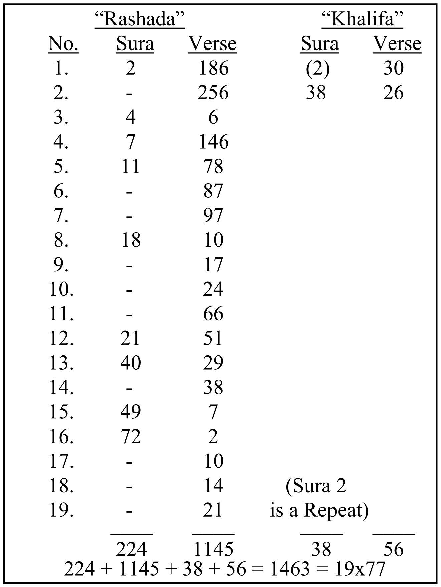
(2) The Quran is made easy for the sincere believers and seekers (54:17, 22, 32, 40 & 39:28). It is an irrevocable divine law that no one is permitted access to the Quran, let alone its great miracle, unless he or she is a sincere believer who is given specific divine authorization (17:45-46, 18:57, 41:44, 56:79). The unveiling of the Quran’s miracle through Rashad Khalifa is a major sign of his messengership.
(3) The root word of the name “Rashad ” is “Rashada ” (to uphold the right guidance). This root word is mentioned in the Quran 19 times. Nineteen is the Quran’s common denominator (see INDEX TO THE WORDS OF QURAN, First Printing, Page 320).
(4) The word “Rashad” occurs in 40:29 & 38. The word “Khalifa” occurs in 2:30 and 38:26. The first “Khalifa” refers to a non-human “Khalifa,” namely, Satan, while the second occurrence (Sura 38), refers to a human “Khalifa.” If we add the numbers of suras and verses of “Rashad” (40:29, 38) and “Khalifa” (38:26) we get 40 + 29 + 38 + 38 + 26 = 171 = 19x9.
(5) The sum of all sura and verse numbers where all “Rashada” and all “Khalifa” occur, without discrimination, add up to 1463, 19x77 (Table 1).
(6) The total of all suras and verses where the root word “Rashada” occurs is 1369, or (19x72) + 1, while the total for all occurrences of “Khalifa” is 94, (19x5)-1. The fact that “Rashada” is up by one and “Khalifa” is down by one pins down the name as “Rashad Khalifa,” and not any “Rashad” or any “Khalifa.”
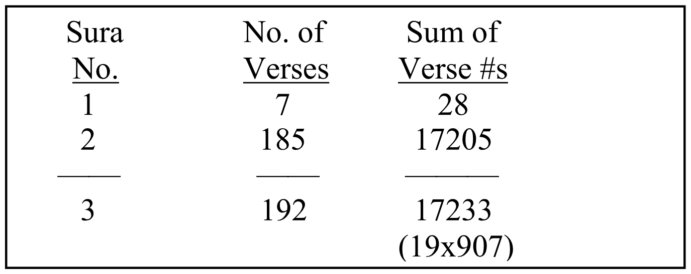
(7) The gematrical value of “Rashad” is 505 and the value of “Khalifa” is 725 (Table 7, Appendix 1). If we add the value of “Rashad Khalifa” (1230) to the sura numbers, and the number of verses, from the beginning of the Quran to the first occurrence of “Rashada,” the total is 1425, 19x75. The details are given in Table 2.
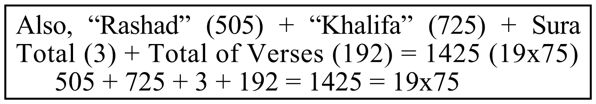
(8) If we add the numbers of all the verses in every sura, i.e., the sum of verse numbers (1 + 2 + 3 + ... + n) from the beginning of the Quran to the first occurrence of the root word “Rashada,” the total comes to 17233,19x907 (Table 2).
(9) The Quranic Initials constitute the basic foundation of the Quran’s miracle. These initials occur in suras 2, 3, 7, 10, 11, 12, 13, 14, 15, 19, 20, 26, 27, 28, 29, 30, 31, 32, 36, 38, 40, 41, 42, 43, 44, 45, 46, 50, and 68. If we add the sum of these numbers (822) to the value of “Rashad Khalifa” (1230), the total is 2052, 19x108.
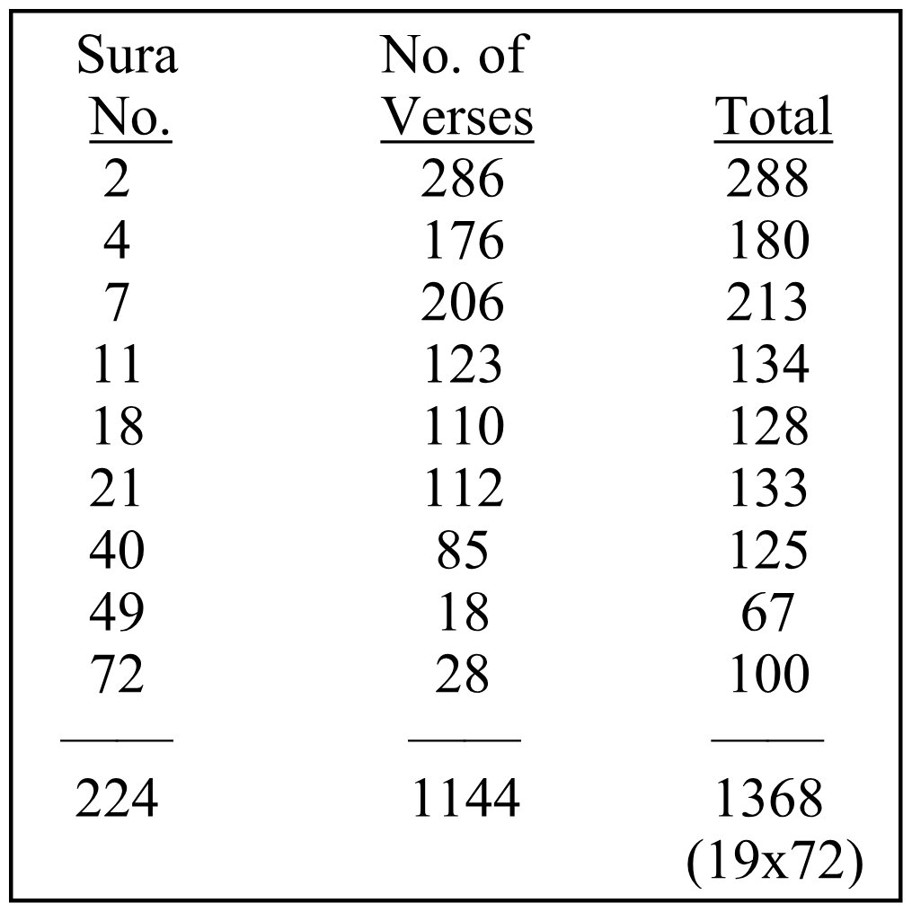
(10) As shown in Table 3, if we add the numbers of all suras where the root word “Rashada” occurs, plus the number of verses, we get 1368, or 19x72.
(11) If we write down the sura number, followed by the number of verses per sura, followed by the individual verse numbers, from the first occurrence of the root word “Rashada” (2:186) to the last occurrence of “Rashada” (72:21), and place these numbers next to each other, we get a very long number that consists of 11087 digits, and is a multiple of 19. This very long number begins with the number of Sura 2, followed by the number of verses in Sura 2 from the first occurrence of “Rashada” at verse 186 to the end of the sura (100 verses). Thus, the beginning of the number looks like this: 2 100. The numbers of these 100 individual verses (187 to 286) are placed next to this number. Thus, the number representing Sura 2 looks like this: 2 100 187 188 189 …. 285 286. The same process is carried out all the way to 72:21, the last occurrence of the root “Rashada.” The complete number looks like this:
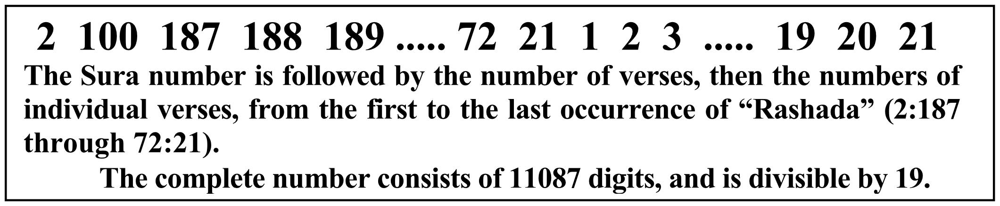
(12) If we examine the suras and verses from the first occurrence of the root word “Rashada” to the word “Khalifa” in 38:26, we find that the sum of sura numbers and their numbers of verses is 4541, or 19x239. The details are in Table 4.
(13) When we write down the value of “Rashad” (505), followed by the value of “Khalifa” (725), followed by every sura number where the root word “Rashada” occurs, followed by the numbers of its verses, from the first “Rashada” (2:186) to the word “Khalifa” (38:26), we get a long number that is divisible by 19.
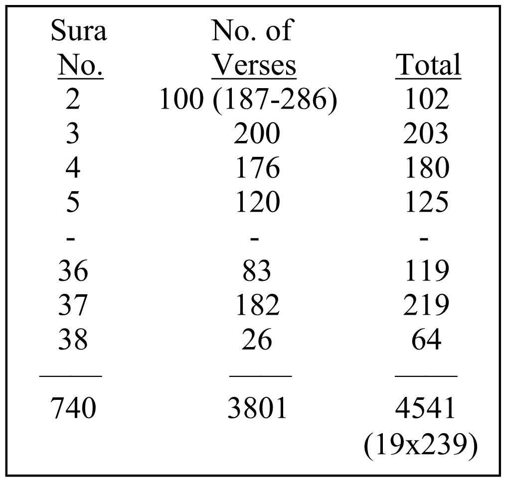
The first occurrence of “Rashada” is in 2:186. So, we write down 2 186. The second occurrence is in 2:256, so we write down 256. The next occurrence is in 4:6, so we write down 4 6, and so on, until we write down 38 26 (“Khalifa” occurs in 38:26). The complete number looks like this:
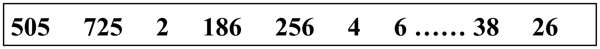
The gematrical value of “Rashad” is followed by the value of “Khalifa,” followed by the sura number and verse numbers of every occurrence of the root word “Rashada” from the first occurrence of “Rashada” to the occurrence of “Khalifa” in 38:26.
(14) The Quran specifies three messengers of Islam (Submission):
Abraham delivered all the practices of Islam. The value of his name = 258
Muhammad delivered the Quran. The value of his name = 92
Rashad delivered Islam’s proof of authenticity. The value of his name = 505
Total gematrical value of the 3 names = 258 + 92 + 505 = 855.
(19x45)
The true Judaism, Christianity, and Islam will be consolidated into one religion—complete submission and absolute devotion to God ALONE.
The existing religions, including Judaism, Christianity, and Islam are severely corrupted and will simply die out (9:33, 48:28, 61:9).
(15) Since the Quran sometimes refers to “Abraham, Ismail, and Isaac,” it was suggested that Ismail and Isaac should be included. Remarkably, the addition of Ismail and Isaac gave a total that is still a multiple of 19. As shown in Table 5, the new total is 1235, or 19x65. This divisibility by 19 is not possible if any of the 3 names Abraham, Muhammad, or Rashad is omitted.
(16) God’s Messenger of the Covenant is prophesied in Verse 81 of Sura 3. The addition of the gematrical value of “Rashad” (505), plus the gematrical value of “Khalifa” (725), plus the Verse number (81), produces 505 + 725 + 81 = 1311 = 19x69.
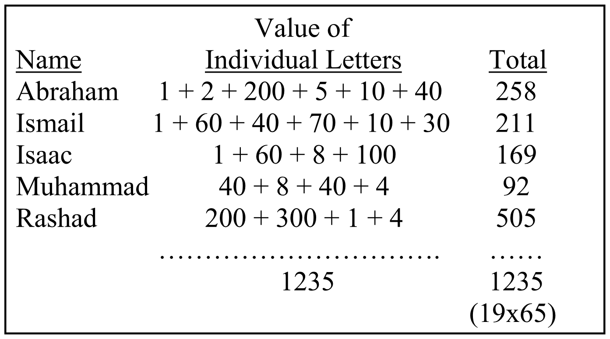
(17) If we look at Sura 81, we read about a messenger of God who is powerfully supported and authorized by the Almighty (Verse 19). Thus, Verse 81 of Sura 3, and Sura 81, Verse 19 are strongly connected with the name “Rashad Khalifa” 505 + 725 + 81 = 1311 = 19x69.
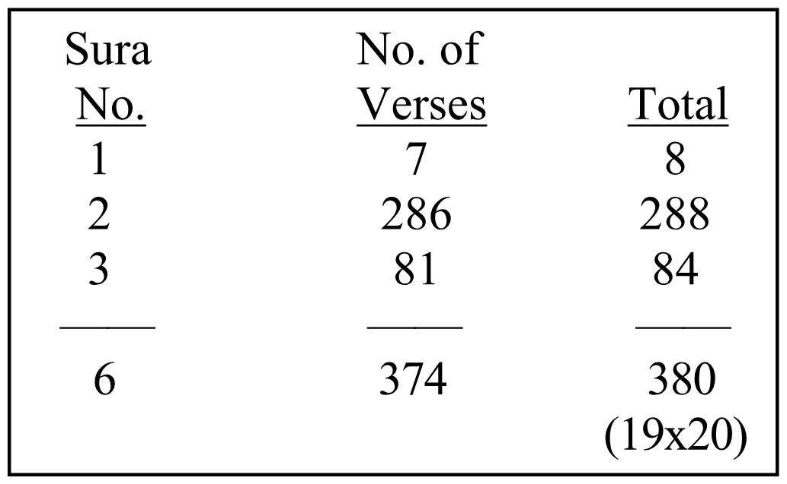
(18) If we add the sura numbers plus the number of verses from the beginning of the Quran to Verse 3:81, where the Messenger of the Covenant is prophesied, the total comes to 380, 19x20. These data are in Table 6.
(19) The gematrical value of Verse 3:81 is 13148, 19x692. This value is obtained by adding the gematrical values of every letter in the verse.
(20) If we look at that portion of Verse 3:81 which refers specifically to the messenger of the Covenant: “A messenger will come to you, confirming what you have,” in Arabic:
“JAA’AKUM RASOOLUN MUSADDIQUN LEMAA MA‘AKUM”
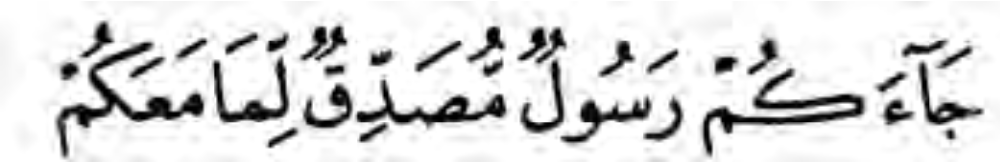
we find that the gematrical value of this key phrase is 836, 19x44.
(21) I was told most assertively, through the angel Gabriel, that Verse 3 of Sura 36 refers specifically to me. If we arrange the initialed suras only, starting with Sura 2, then Sura 3, then Sura 7, and so on, we find that Sura 36, Ya Seen, occupies position number 19.
(22) Verse 3 of Sura 36 says, “Surely, you are one of the messengers.” The gematrical value of this phrase is 612. By adding this value (612), plus the sura number (36), plus the verse number (3), plus the gematrical value of “Rashad Khalifa” (505+ 725), we get 36 + 3 + 612 + 505 + 725 = 1881 = 19x99.
(23) Sura 36 consists of 83 verses. If we add the sura number (36), plus its number of verses (83), plus the gematrical value of “Rashad Khalifa” (505 + 725), we get 36 + 83 + 505 + 725 = 1349 = 19x71.
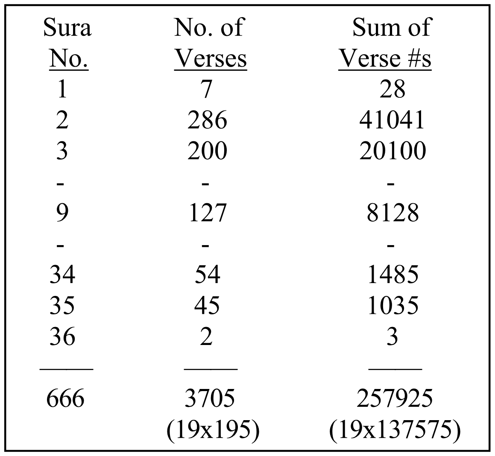
(24) From 3:81, where the Messenger of the Covenant is prophesied, to Sura 36, there are 3330 verses. By adding the value of “Rashad Khalifa” (1230), to this number of verses (3330), we get 505 + 725 + 3330 = 4560, 19x240.
(25) From 3:81 to 36:3 there are 3333 verses. By adding this number to the gematrical value of “Rashad” (505), we get 3333 + 505 = 3838 = 19x202.
(26) The number of verses from 1:1 to 36:3 is 3705, 19x195 (Table 7).
(27) The sum of verse numbers of every sura from 1:1 to 36:3 is 257925, 19x13575 (Table 7).
(28) The sum of sura numbers from Sura 1 to Sura 36 is 666 (Table 7). If we add this sum to the gematrical value of “Rashad Khalifa” (505 + 725), plus the gematrical value of verse 36:3 “Surely, you are one of the messengers,” (612), the total is:
666 + 505 + 725 + 612 = 2508= 19x132.
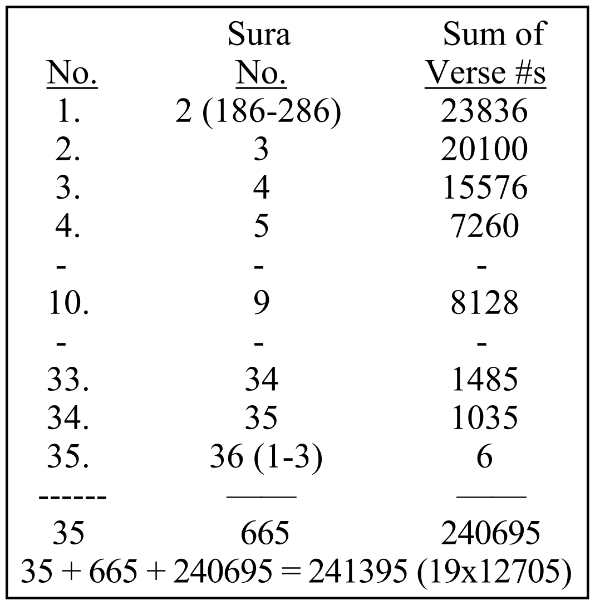
(29) If we add the sum of verse numbers (1 + 2 + 3 + ... + n) from the first occurrence of the root word “Rashada” (2:186) to 36:3 (You are one of the messengers) to the total of suras (35), plus the sura numbers themselves, the total is 241395, or 19x12705 (Table 8).
(30) The sum of sura numbers from the first occurrence of the root word “Rashada” to 36:3 is 665, 19x35. Note that these are 35 suras (Table 8).
O people of the scripture, our messenger has come to you, to clarify things for you, after a long period without messengers. Lest you say, “No preacher or warner has come to us.” A preacher and warner has come to you. God is Omnipotent. [5:19]
(31) Obviously, the number of this verse is 19, the Quran’s common denominator discovered by Rashad, and the number of occurrences of “Rashada” in the Quran.
(32) If we add the value of “Rashad Khalifa” (1230), plus the sura number (5), plus the verse number (19), we get 1230 + 5 + 19 = 1254 = 19x66.
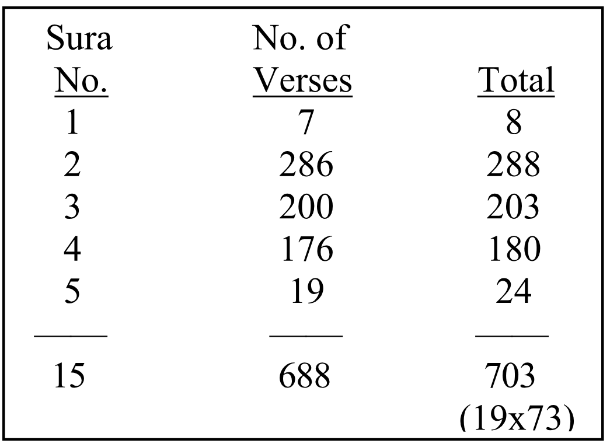
(33) The sum of the sura numbers and the number of verses from the beginning of the Quran to this verse (5:19) is 703,19x37. See Table 9.
(34) Sura 98, “The Proof,” Verse 2, proclaims the advent of God’s Messenger of the Covenant for the benefit of “The People of the Scripture (Jews, Christians, and Muslims).” By adding the gematrical value of “Rashad Khalifa” (505 + 725) to the sura number (98), plus the verse number (2), we get:
505 + 725 + 98 + 2 = 1330 = 19x70.
Those who disbelieved among the people of the scripture (Jews, Christians, Muslims), and the idolators, will not believe, despite the profound sign given to them. [98:1]
A messenger from God, reciting Sacred Scriptures. [98:2]
(35) It is noteworthy that the word “Bayyinah,” which means “Profound Sign,” and is the title of Sura 98, occurs in the Quran 19 times. This is another mathematical confirmation that the Quran’s proof of divine authorship is based on the prime number 19, and that “Rashad Khalifa” is the messenger in 98:2.
(36) By adding the sura numbers, plus the number of verses in each sura, from the 1:1 to 44:13, the total comes to 5415, 19x19x15 (Table 10).
(37) The sum of the sura number (44) plus the number of the verse where the messenger is predicted (13) equals 57, 19x3. See Table 10.
(38) God is the only Knower of the future; He knows exactly when this world will end (7:187, 31:34, 33:63, 41:47, 43:85). We learn from the Quran that God reveals certain aspects of the future to His chosen messengers. In Appendix 25, evidence is presented that Rashad Khalifa was blessed with unveiling the End of the World, in accordance with 72:27.
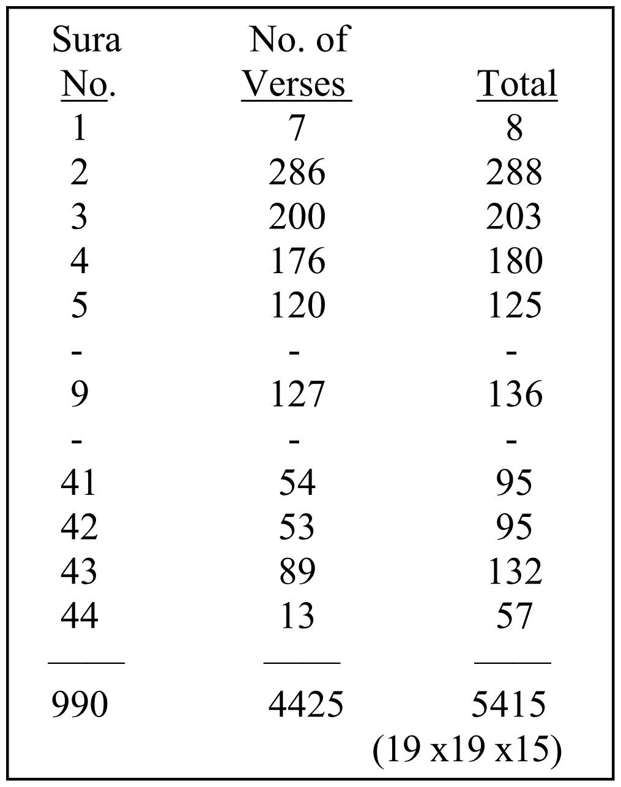
(39) The number of verses from the beginning of the Quran to Verse 72:27 is 5472, or 19x72x4. Note that the messenger who is given information about the future in 72:27, and that this sura contains 4 “Rashada” words (72:2, 10, 14, & 21). By adding the value of “Rashad Khalifa” (1230), plus the sura number (72), plus the numbers of the 4 verses where “Rashada” is mentioned, we get 1230 + 72 + 2 + 10 +14 + 21 = 1349 = 19x71.
(40) Verse 72:27 begins with the statement “
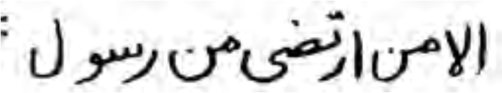
” (Only the Messenger that He chooses). This reference to the messenger who is chosen by God to receive news about the future has a gematrical value of 1919. Table 11 presents the data.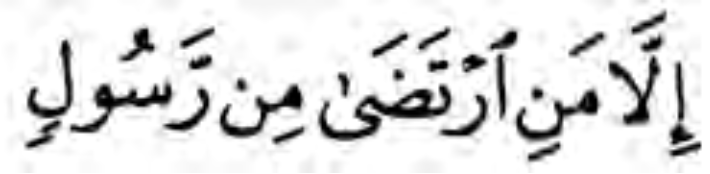
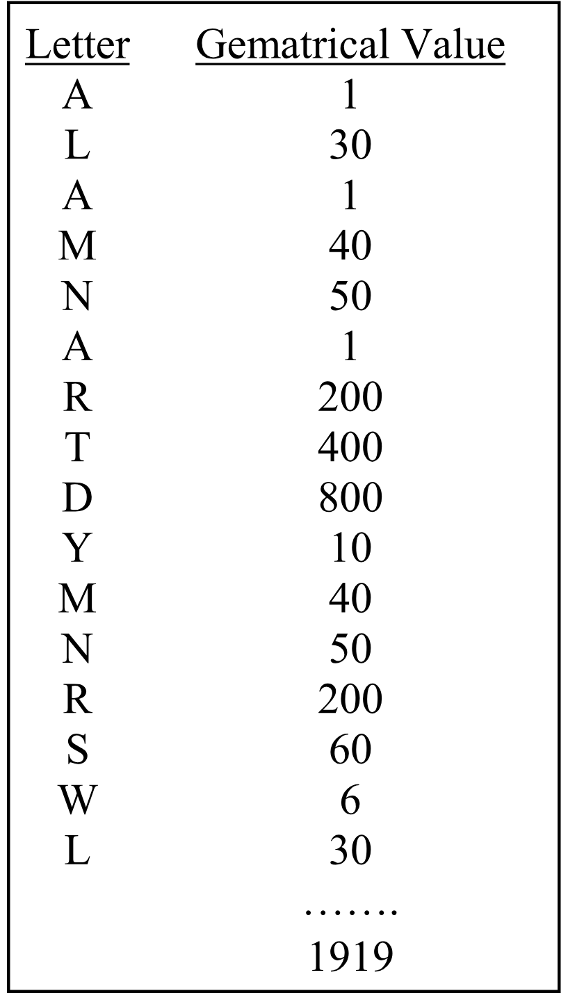
The Quran provides straightforward criteria to distinguish the true messengers of God from the false messengers:
[1] God’s messenger advocates the worship of God ALONE, and the abolition of all forms of idol worship.
[2] God’s messenger never asks for a wage for himself.
[3] God’s messenger is given divine, incontrovertible proof of his messengership.
Anyone who claims to be God’s messenger, and does not meet the three minimum criteria listed above is a false claimant.
The most important difference between God’s messenger and a fake messenger is that God’s messenger is supported by God, while the fake messenger is not:
* God’s messenger is supported by God’s invisible soldiers (3:124-126, 9:26&40, 33:9, 37:171-173, 48:4&7, 74:31).
* God’s messenger is supported by God’s treasury (63:7-8).
* God’s messenger, as well as the believers, are guaranteed victory and dignity, in this world and forever (40:51 & 58:21).
Thus, the truthfulness of God’s messenger invariably prevails, while the falsehood of a fake messenger invariably, sooner or later, is exposed.
As stated in the Quran, 3:81, God’s Messenger of the Covenant shall confirm all the scriptures, which were delivered by all the prophets, and restore them to their original purity.
When the believers are faced with a problem, they develop a number of possible solutions, and this invariably leads to considerable bickering, disunity, and disarray. We learn from 2:151, 3:164, and 21:107 that it is but mercy from God that He sends to us messengers to provide the final solutions to our problems. We learn from 42:51 that God sends His messengers to communicate with us, and to disseminate new information. Hence the strong injunction in 4:65, 80 to accept, without the slightest hesitation, the teachings delivered to us through God’s messengers.
The following is a list of the principal duties of God’s Messenger of the Covenant:
1. Unveil and proclaim the Quran’s mathematical miracle (Appendix 1).
2. Expose and remove the two false verses 9:128-129 from the Quran (App. 24).
3. Explain the purpose of our lives; why we are here (Appendix 7).
4. Proclaim one religion for all the people, and point out and purge away all the corruptions afflicting Judaism, Christianity, and Islam (Appendices 13, 15,19).
5. Proclaim that Zakat (obligatory charity) is a prerequisite for redemption (7:156), and explain the correct method of observing Zakat (Appendix 15).
6. Unveil the end of the world (Appendix 25).
7. Proclaim that those who die before the age of 40 go to Heaven (Appendix 32).
8. Explain Jesus’ death (Appendix 22).
9. Explain the Quran’s delivery to, then through Muhammad (Appendix 28).
10. Announce that Muhammad wrote God’s revelations (the Quran) with his own hand (Appendix 28).
11. Explain why most believers in God do not make it to Heaven (Appendix 27).
12. Proclaim that God never ordered Abraham to kill his son (Appendix 9).
13. Proclaim the secret of perfect happiness (Introduction, xx).
14. Establish a criminal justice system (Appendix 37).